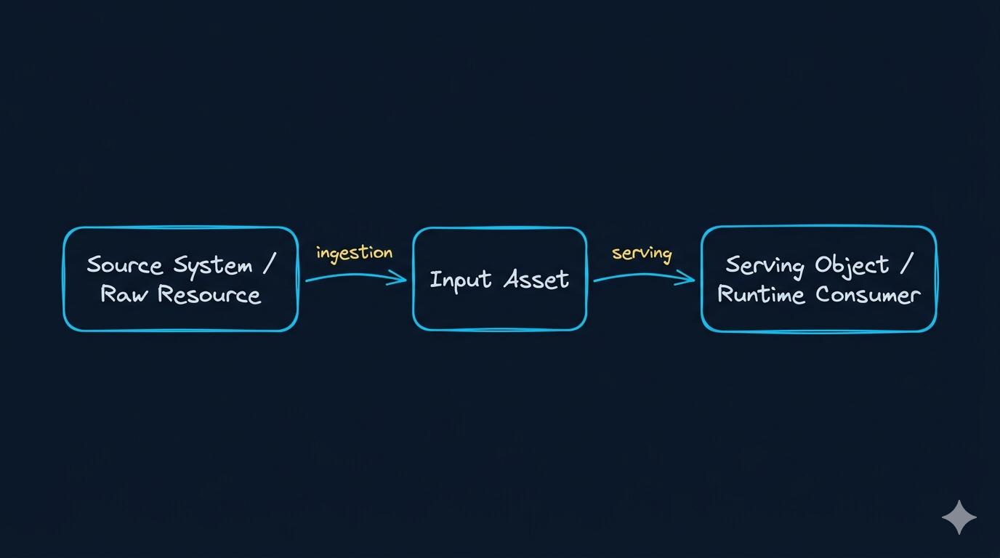

Week02｜课时 2｜从资源目录到输入地图：企业数据资产盘点方法论
盘点不是列目录，而是为 AI 系统建立输入地图
这一讲不是教你“怎么填一张资产表”，而是把资产盘点真正推进到工程状态：
从这节课开始，你要把企业里的候选资源，整理成一张 AI 系统可消费、可接入、可继续压成契约和采集策略的输入地图。
这节课解决什么问题
从这一讲开始，你不只是要理解“输入为什么重要”，还要真正开始做一件能进入仓库、进入版本管理、进入后续 contract / manifest / ingest 的事情：
把企业里的候选数据资源，整理成一张 AI 系统可消费的输入地图。
如果你只做“资源目录”，你得到的是一份清单； 如果你做成“输入地图”，你得到的是后续数据契约、权限边界、采集策略和证据链的起点。
参考学习时间（50–60 分钟）
如果你只阅读正文，大约需要 30–35 分钟；如果你跟着本课一起把 asset_inventory_v1.csv 的首版字段补齐，并顺手把输入对象、风险标签和后续 contract / manifest 映射一起走一遍，建议预留 50–60 分钟。
本课你将完成什么
学完这一讲，你应该能做到：
- 解释为什么“列目录”不等于“做资产盘点”。
- 用一套统一方法盘点
ticket / document / audio / video四类主资产。 - 用四个问题判断一项资源是否有资格进入 AI 系统。
- 给每项资产打上
ready_now / conditional / hold / exclude的准入标签。 - 在仓库里完成
docs/blueprints/week02/asset_inventory_v1.csv，为课时 3、4、5 做准备。
本课产出
完成这一讲后，你至少应该产出两样东西：
- 一份
docs/blueprints/week02/asset_inventory_v1.csv（至少 4 条记录） - 一份“待补条件清单”，写明哪些资产还不能直接进入课时 3–5 的规则与契约设计
资源目录、输入地图、服务对象，到底差在哪
这三个对象经常混在一起，但它们根本不是一回事。
| 对象 | 它描述什么 | 它还没解决什么 |
|---|---|---|
| 资源目录 | 我们手里有哪些表、文档、录音、视频 | 是否适合作为 AI 输入 |
| 输入地图 | 哪些输入值得接、如何接、谁负责、影响谁 | 最终被哪个服务对象消费 |
| 服务对象 | 哪些结构会被 RAG、Tool、Eval、Agent 消费 | 上游资源与准入过程 |
如果你跳过“输入地图”这层，后面所有 contract、manifest 和 ingest 策略都会变成拍脑袋决定。
先看一张三层对象模型图

这张图的关键点是：
- source system 是世界原貌
- input asset 是 Week02 真正要定义的对象
- serving object 是 Week03 之后系统持续消费的对象
为什么 source ≠ asset ≠ serving object
| 对象 | 它是什么 | 谁负责 | 如果混了会怎样 |
|---|---|---|---|
| source system / raw resource | 原始世界 | 业务系统 / 内容系统 | AI 团队会误把“原始资源”当成“可消费输入” |
| input asset | Week02 真正定义的接入对象 | AI 数据工程 / 数据产品 | 后面根本写不出 contract |
| serving object | Week03 之后稳定被消费的数据对象 | ingest / serving / retrieval | 下游消费对象会混乱，边界无法稳定 |
一个能直接上手的方法：发现资源 → 资格审查 → 消费映射
第一步：发现资源
先把候选资源找出来，不急着决定接不接。
典型候选包括：
- 工单表、评论流、状态事件
- PDF 手册、FAQ、SOP、Release Notes
- 通话录音、转写、语音质检文本
- 教程视频、录屏、关键帧 OCR、字幕文本
第二步：资格审查
再问：这项资源有没有资格成为 AI 输入资产？
判断时不要只看“有没有数据”，而要看：
- 事实是不是清楚
- 证据是不是可追溯
- 边界是不是明确
- 责任是不是落人
第三步：消费映射
最后再问：这项资产会被谁消费？
- 语义层会不会用到它
- RAG 会不会检索它
- Agent 会不会依赖它做动作判断
- 评测、Tracing、治理会不会追它
这一步会直接决定它后面要进入哪些 contract、manifest 和权限策略。
真正有用的盘点字段至少有 12 个，但要按 4 组来理解
很多盘点表只有 系统名 / 表名 / 说明 三列，这类表很难进入工程系统。
更像企业实战的输入地图，至少应该覆盖下面这些字段，而且要知道它们分别在回答哪类问题。
1. 身份与事实组
| 字段 | 作用 |
|---|---|
asset_id |
唯一标识输入资产 |
asset_name |
业务可读名称 |
asset_class |
ticket / document / audio / video 等主类 |
business_fact |
它承载什么事实 |
source_system |
它来自哪个业务系统 |
2. 责任与更新组
| 字段 | 作用 |
|---|---|
owner |
失败先找谁 |
update_mode |
全量、增量、版本替换还是事件驱动 |
freshness_expectation |
业务上希望多快更新 |
3. 边界与风险组
| 字段 | 作用 |
|---|---|
access_scope |
谁能看、谁能搜、谁能送进模型 |
pii_level |
风险级别 |
risk_tags |
哪些风险最值得先盯住 |
4. 消费与演进组
| 字段 | 作用 |
|---|---|
evidence_requirements |
哪些定位/追责字段是硬要求 |
downstream_consumers |
后续哪些系统会消费 |
onboarding_decision |
ready_now / conditional / hold / exclude |
为什么很多资产盘点最后在企业里失效
最常见的失败方式不是“没人做”，而是做了以后没人再用。
| 失效原因 | 表面现象 | 深层问题 |
|---|---|---|
| 只盘资源不盘责任 | 表还在，owner 已失真 | 资产变更时没人更新 |
| 只盘字段不盘消费 | 字段很多，但没人看 | 后续 contract / manifest 无法消费 |
| 只盘今天不盘变化 | 当天看着完整 | 一周后 update_mode、风险、权限已漂移 |
| 把盘点当文档，而不是系统入口 | 文档存在 | 工程路径完全不引用它 |
企业里最常见的 3 个盘点假动作
| 假动作 | 当下看起来在做事 | 为什么两周内就会失效 |
|---|---|---|
| 只盘系统，不盘业务事实 | 表很多、系统很多，看起来很完整 | 后面没人知道这份输入到底承载什么事实，无法写 contract |
| 只盘字段，不盘责任人 | Excel 很细，但没有 owner | 一旦字段变更或权限变动，没有人会更新这张图 |
| 只盘今天，不盘变化模式 | 当前状态对得上 | 下一次批量更新、版本替换或事件流进来时，manifest 和 ingest mode 全部要重猜 |
四类主资产的完整样例
ticket
| 字段 | 示例 |
|---|---|
asset_name |
ticket_fact |
business_fact |
工单生命周期与处理状态 |
update_mode |
batch_hourly |
evidence_requirements |
ticket_id;updated_at;status_change_ts |
document
| 字段 | 示例 |
|---|---|
asset_name |
product_manual_v3 |
business_fact |
安装步骤与错误码说明 |
update_mode |
version_replace |
evidence_requirements |
source_fingerprint;doc_version;page_no;section_path |
audio
| 字段 | 示例 |
|---|---|
asset_name |
support_call_transcript |
business_fact |
用户问题与排障对话 |
update_mode |
batch_daily |
evidence_requirements |
call_id;speaker_role;start_ts;end_ts;pii_redaction_flag |
video
| 字段 | 示例 |
|---|---|
asset_name |
studio_onboarding_video_v2 |
business_fact |
上手流程与界面操作 |
update_mode |
version_replace |
evidence_requirements |
video_id;segment_ts;frame_ts;transcript_ref;ocr_text |
如何做准入分层：ready_now / conditional / hold / exclude
盘点不是全收，而是做准入判断。
| 准入标签 | 含义 | 什么时候用 |
|---|---|---|
ready_now |
可以直接进入课时 3/4 的规则和契约设计 | owner、边界、更新方式比较清楚 |
conditional |
有业务价值，但要先补条件 | 还缺元数据、权限规则或稳定 owner |
hold |
暂时低优先级 | 现在不进入本周主线 |
exclude |
明确不接入 | 高风险、授权不清或不适合作为 AI 输入 |
一份更像企业实战的 asset inventory 长什么样
下面这 4 条 starter，不是为了凑表格，而是为了让你看到“输入地图”该怎样同时服务课时 3–5。
asset_id,asset_name,asset_class,business_fact,source_system,owner,update_mode,freshness_expectation,access_scope,pii_level,evidence_requirements,downstream_consumers,onboarding_decision,risk_tags
A001,ticket_fact,ticket,工单生命周期与处理状态,zendesk,customer-support-data,batch_hourly,1h,tenant+role,restricted,"ticket_id;updated_at;status_change_ts",semantic-layer|tool-api|rag-api,ready_now,"schema_drift;enum_drift;pii"
A002,product_manual_v3,document,安装步骤与错误码说明,kb_portal,product-ops,version_replace,on_release,product_line,low,"source_fingerprint;doc_version;page_no;section_path",rag-api|evals,ready_now,"metadata_missing;version_conflict"
A003,support_call_transcript,audio,用户问题与排障对话,call-center,service-ops,batch_daily,1d,restricted_role,restricted,"call_id;speaker_role;start_ts;end_ts;pii_redaction_flag",rag-api|qa-review|evals,conditional,"pii;asr_error;speaker_loss"
A004,studio_onboarding_video_v2,video,上手流程与界面操作,studio-media,education-content,version_replace,on_update,internal_or_entitled,low,"video_id;segment_ts;frame_ts;transcript_ref;ocr_text",rag-api|training-assistant,conditional,"ocr_missing;timeline_break;caption_gap"一场真实资产盘点访谈该怎么问
你不可能靠猜把输入地图盘对。更可靠的办法，是把访谈问题标准化。
| 你要问谁 | 你要问什么 | 你真正想确认什么 |
|---|---|---|
| 业务 owner | 这份数据代表什么事实？ | business_fact |
| 系统 owner | 更新方式是什么？ | update_mode / freshness_expectation |
| 安全 / 合规 | 哪些字段不能直接给模型？ | access_scope / pii_level |
| 下游消费者 | 后面谁要用、怎么用？ | downstream_consumers |
从 asset inventory 到 contract 的映射关系
| inventory 字段 | 后续会进入哪里 |
|---|---|
asset_class |
contract 分类 / manifest 路由 |
pii_level |
PII policy / gate |
evidence_requirements |
metadata minimum / contract |
update_mode |
manifest / Week03 ingest mode |
downstream_consumers |
serving / retrieval / tools |
直接动手：写出 docs/blueprints/week02/asset_inventory_v1.csv
第 1 步：在项目仓库里创建 Week02 蓝图目录
mkdir -p docs/blueprints/week02
touch docs/blueprints/week02/asset_inventory_v1.csv第 2 步：先写最小列头
asset_id,asset_name,asset_class,business_fact,source_system,owner,update_mode,freshness_expectation,access_scope,pii_level,evidence_requirements,downstream_consumers,onboarding_decision,risk_tags第 3 步：至少补 4 条首版记录
建议优先覆盖：
- 1 条
ticket - 1 条
document - 1 条
audio - 1 条
video
第 4 步：再补两类解释
- 每条记录为什么是这个
onboarding_decision - 哪些资产还缺条件，准备带到课时 3 去补元数据和 PII
本课自检清单
小结
课时 2 真正完成的标志，不是你列出了一张资源表，而是你已经把企业原始资源压成一张后续可以继续进入 metadata、contract、manifest 的输入地图。
课后最小行动
在进入课时 3 之前，请完成这 3 件事：
- 让
asset_inventory_v1.csv至少包含四类主资产各 1 条 - 为每条资产补齐
owner / access_scope / onboarding_decision - 写下哪两项资产最有业务价值，但目前仍然只能标
conditional